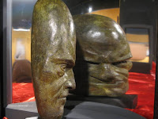
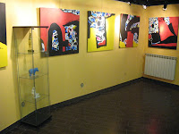

Las obras de Conde y Pulido, ejes de la cultura mediterránea
jueves, 5 de abril de 2012
Ramón Conde y Antón Pulido son los dos artistas gallegos que forman parte de la exposición Artistas Mediterráneos, que desde el 23 de marzo se muestra en la Embajada de Egipto en Roma.
La Oficina Cultural de Egipto, en cooperación con el municipio de centro histórico de Roma y la Asociación de Aci & Galatea-Roma, ha propuesto este encuentro de artistas mediterráneos para ofrecer a través de los canales de la cultura un puente de entendimiento mutuo.
 |
| Obra de Ramón Conde |
{kind=link}
 | ||||
| Obra de Antón Pulido |
{kind=link}
Así, la muestra comisariada por Salvatore G. Battista Grimaldi y en la que toman parte, además de Ramón Conde y Antón Pulido, El-Wetery, Walled Matar, Momo Calascibetta, Antonello Capozzi, Teresa Coratella, Michele Principato, Adriano Maraldi, Manuel Barata, Enriqueta Hueso Martínez y Salvalorén
El Mediterráneo, cuna de diversas culturas que se enfrentaron y se encontraron en el tiempo, es ahora la propuesta para los artistas italianos, españoles y egipcios que toman parte en la exposición.